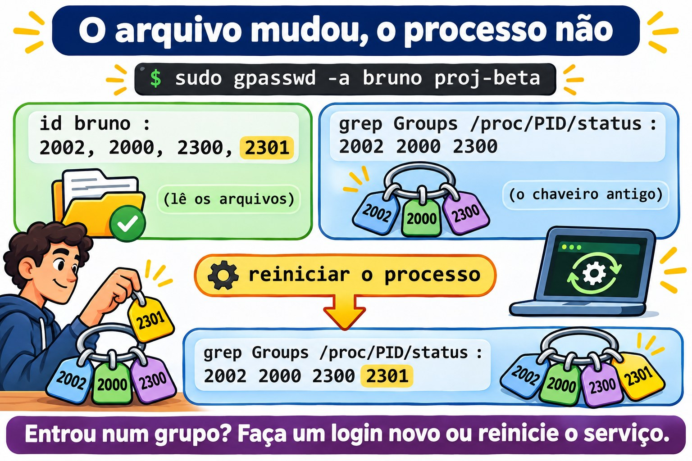

Aula 10.3 · Grupos e trabalho em equipe
No Windows, você cria um grupo no AD, dá permissão ao grupo na pasta e delega a outra pessoa o direito de mudar quem participa. Quem entra no grupo só ganha o acesso depois de fazer logon de novo. No Linux, a ideia é a mesma, e até a pegadinha do logon é igual. Na Aula 2.8 você montou uma pasta de equipe com setgid. Nesta aula você organiza vários projetos, cada um com o seu grupo, delega a gestão de um grupo sem dar sudo, entende por que o acesso novo não chega a quem já está logado e acerta o umask de quem trabalha em conjunto.
Núcleo desta aula: separar o grupo principal (um só, no
/etc/passwd) dos suplementares (no/etc/group); lembrar que quem tem o grupo como principal não aparece na lista de membros; criar uma pasta por projeto cominstall -d -m 2770 -g; delegar a gestão comgpasswd -A; saber que um processo guarda os grupos que tinha quando nasceu; e saber que trocar o grupo principal de alguém muda oumaskdele. O resto é aprofundamento.
| Ficha | |
|---|---|
| Módulo | M10 · Usuários e acesso privilegiado, aula 3 de 4 |
| Quando | Semana 15 |
| Ao final | Você monta grupos de projeto com pastas próprias, delega a gestão de um grupo e explica por que um acesso novo ainda não funciona |
| Pré-requisitos | Aulas 2.7, 2.8, 8.5 e 10.2 |
| Tempo | cerca de 2h |
| Snapshots | m10a3-inicio e m10a3-fim na rocky-lab e na debian-lab |
1 · Aquecimento
Responda antes de ler.
- O
getent group equipenão lista o Bruno, e mesmo assim ele grava na/srv/equipe. Como? - Você pôs o Bruno num grupo novo. Ele já estava logado. Ele tem o acesso?
- A Ana coordena o projeto Alfa. Ela precisa de
sudopara incluir alguém no grupo do projeto?
2 · Por que importa
| O chamado | A resposta errada | O que ela causa |
|---|---|---|
| "Liste quem tem acesso ao projeto" | Só o getent group | Faltam as pessoas que têm o grupo como principal |
| "Eu entrei no grupo e continuo sem acesso" | Mexer nas permissões da pasta | O problema é a sessão antiga; a pasta estava certa |
| "A coordenadora quer incluir gente no grupo dela" | Dar sudo para o gpasswd | Com o sudo, ela muda qualquer grupo, inclusive o wheel |
| "Deixe o grupo do projeto como principal de todos" | usermod -g proj-alfa em cada um | O umask deles muda para 022, e os colegas param de editar os arquivos uns dos outros |
| "Apague o grupo do projeto antigo" | groupdel com a pasta ainda lá | Os arquivos ficam com um número no lugar do grupo |
3 · Modelo mental
Pense num chaveiro. Cada pessoa tem uma chave principal, a que vai no arquivo novo que ela cria, e um molho de chaves extras, uma para cada grupo de que participa. O chaveiro é montado no login: quem ganha uma chave nova só passa a carregá-la quando monta o chaveiro de novo. E cada pasta de projeto tem uma fechadura só: o grupo do projeto, que o setgid passa para todo arquivo criado ali dentro.
/etc/passwd bruno:x:2002:2002:... ← chave principal (GID 2002, o grupo bruno)
/etc/group equipe:x:2000:ana,bruno ← chaves extras: quem está na lista
proj-alfa:x:2300:ana,bruno
/etc/gshadow proj-alfa:!:ana:ana,bruno ← quem pode mudar a lista: ana
login do bruno → o chaveiro é montado: 2002, 2000, 2300
todo processo filho herda o mesmo chaveiro
entrou num grupo depois? → o chaveiro só muda num login novo
Ponte Windows
| No Windows | No Linux | Onde a comparação engana |
|---|---|---|
| Grupo de segurança do AD | Grupo do /etc/group | O Linux não aninha grupos: grupo dentro de grupo não existe |
| "Grupo principal" do usuário | Grupo principal do /etc/passwd | No Linux ele importa todo dia: é o grupo dos arquivos que a pessoa cria |
| "Gerenciado por", com o direito de mudar os membros | gpasswd -A (administrador do grupo) | Fica no /etc/gshadow, e só vale para aquele grupo |
| Token de acesso montado no logon | Grupos do processo, montados no login | Igual: entrou no grupo, faça um login novo |
| Permissão de leitura para auditores | ACL de grupo (Aula 8.5) | O modo tem um grupo só; o segundo grupo precisa de ACL |
4 · O essencial
Principal e suplementares
| Tipo | Onde fica | Quantos | O que decide |
|---|---|---|---|
| Principal | Quarto campo do /etc/passwd | Um | O grupo dos arquivos que a pessoa cria (fora de pastas com setgid) |
| Suplementar | Quarto campo do /etc/group | Vários | O acesso a pastas e arquivos daquele grupo |
Com USERGROUPS_ENAB yes no login.defs, o padrão das duas distribuições, todo useradd cria também um grupo pessoal, com o mesmo nome. É por isso que o grupo pode ter w no umask (Aula 2.7): ninguém mais está no grupo pessoal.
A pegadinha da lista: o /etc/group só lista os membros suplementares. Para saber todos os membros de um grupo, some os dois:
getent group equipe | cut -d: -f4
getent passwd | awk -F: '$4 == 2000 {print $1}'Uma pasta por projeto
sudo groupadd -g 2300 proj-alfa
sudo install -d -m 2770 -o root -g proj-alfa /srv/projetos/alfaO install -d cria a pasta já com dono, grupo e modo, num comando só. 2770: setgid, tudo para o dono e o grupo, nada para os outros.
Quem cuida da lista
| Comando | Quem pode rodar | Faz |
|---|---|---|
gpasswd -A ana proj-alfa | root | A Ana passa a administrar o grupo |
gpasswd -a bruno proj-alfa | root ou um administrador do grupo | Inclui |
gpasswd -d bruno proj-alfa | root ou um administrador do grupo | Tira |
gpasswd -M ana,bruno proj-alfa | root ou um administrador do grupo | Troca a lista inteira |
O gpasswd é setuid: a Ana roda sem sudo, e ele confere no /etc/gshadow se ela administra aquele grupo.
O chaveiro é montado no login
| Onde | Quando os grupos novos chegam |
|---|---|
| Sessão SSH ou console | No próximo login |
| Serviço do systemd | No próximo restart |
sudo -u bruno ... | Na hora: o sudo monta os grupos de novo |
| Shell atual | newgrp abre um shell novo com o grupo (Aula 2.6) |
Para ver os grupos de um processo que já está rodando: grep Groups /proc/PID/status. O id bruno mostra o que está nos arquivos, e não o que o processo carrega.


De onde vem o umask
| Onde | Rocky | Debian |
|---|---|---|
UMASK e USERGROUPS_ENAB no /etc/login.defs | Lidos | Lidos |
| Quem aplica no login | O /etc/profile e o /etc/bashrc, ou o pam_umask | O pam_umask, nas versões recentes |
| Regra do grupo pessoal | Se o nome do grupo principal é igual ao do usuário, 002; senão, 022 | A mesma |
A consequência prática: quem troca o grupo principal de alguém para um grupo de projeto troca, sem querer, o umask dele para 022.

Rocky × Debian
| Rocky | Debian | |
|---|---|---|
groupadd, gpasswd, install | Iguais | Iguais |
| Ferramenta amigável | Não há | adduser bruno proj-alfa inclui num grupo |
umask de usuário com grupo pessoal | Em geral 0002 | Em geral 0002; depende da versão |
| Onde procurar a regra | grep -n umask /etc/profile /etc/bashrc | grep -rn umask /etc/pam.d/common-session /etc/login.defs |
setfacl | Já instalado | Pacote acl, se faltar (Aula 8.5) |
5 · Lab guiado
Passo 0 · Snapshots e estado. No Proxmox: qm snapshot 201 m10a3-inicio e qm snapshot 202 m10a3-inicio. Na rocky-lab:
id ana
id bruno
getent group equipe
sudo stat -c '%A %U:%G %n' /srv/equipe
sudo passwd -S brunoA Ana e o Bruno têm o grupo pessoal como principal (gid=2001(ana) e gid=2002(bruno)) e o equipe como suplementar. O Bruno tem a senha que você definiu na Aula 10.2.
Passo 1 · Principal e suplementares.
id -gn bruno
id -Gn bruno
grep -E '^(bruno|equipe):' /etc/group
getent passwd | awk -F: '$4 == 2000 {print $1}'O primeiro mostra só o principal, o segundo todos. No /etc/group, o grupo bruno tem a lista de membros vazia: ele é o principal do Bruno, e principal não entra na lista. O awk procura quem tem o equipe (2000) como principal: por enquanto, ninguém.
Passo 2 · Dois projetos.
sudo groupadd -g 2300 proj-alfa
sudo groupadd -g 2301 proj-beta
sudo install -d -m 0755 /srv/projetos
sudo install -d -m 2770 -o root -g proj-alfa /srv/projetos/alfa
sudo install -d -m 2770 -o root -g proj-beta /srv/projetos/beta
sudo gpasswd -a ana proj-alfa
ls -l /srv/projetosAs duas pastas aparecem como drwxrws---, uma de cada grupo. A Ana está no Alfa; ninguém está no Beta.
Passo 3 · Delegar o Alfa para a Ana.
sudo gpasswd -A ana proj-alfa
sudo getent gshadow proj-alfa
sudo -u ana gpasswd -a bruno proj-alfa
getent group proj-alfaO gshadow mostra a Ana no terceiro campo, o dos administradores. Ela incluiu o Bruno sem sudo: o sudo -u ana aqui só serve para você agir como ela. Agora ela tenta mexer no Beta:
sudo -u ana gpasswd -a bruno proj-betaA resposta é gpasswd: Permission denied.: ela administra o Alfa, e só o Alfa.
Passo 4 · O chaveiro antigo. Coloque um processo do Bruno para rodar, como se fosse uma sessão aberta:
sudo systemd-run --uid=bruno --unit=lab103 sleep 600
pid=$(systemctl show -p MainPID --value lab103)
grep Groups /proc/$pid/statusA linha mostra números: 2002, 2000 e 2300. Agora inclua o Bruno no Beta:
sudo gpasswd -a bruno proj-beta
id bruno
grep Groups /proc/$pid/statusO id já mostra o proj-beta, porque lê os arquivos. O processo continua sem o 2301: o chaveiro dele foi montado antes. Reinicie e confira:
sudo systemctl stop lab103
sudo systemd-run --uid=bruno --unit=lab103 sleep 600
pid=$(systemctl show -p MainPID --value lab103)
grep Groups /proc/$pid/status
sudo systemctl stop lab103Agora o 2301 aparece. Com uma pessoa é igual: sair e entrar de novo.
Passo 5 · O umask de quem trabalha junto.
grep -E '^(UMASK|USERGROUPS_ENAB)' /etc/login.defs
sudo su - bruno -c umask
sudo su - bruno -c 'touch /srv/projetos/alfa/plano.txt'
sudo stat -c '%A %U:%G %n' /srv/projetos/alfa/plano.txt
sudo -u ana sh -c 'echo "revisado" >> /srv/projetos/alfa/plano.txt'O umask do Bruno é o que você anotou na Aula 2.7, em geral 0002. O arquivo nasce -rw-rw-r--, do Bruno, com o grupo proj-alfa vindo do setgid, e a Ana consegue editar.
Passo 6 · Quem só lê. A revisora Lia precisa ler o Alfa, sem mudar nada:
sudo groupadd -g 2302 revisao
sudo useradd -u 2310 -c "Lia Revisora" -m -s /bin/bash -G revisao lia
sudo setfacl -m g:revisao:rx -m d:g:revisao:rx /srv/projetos/alfa
sudo -u lia ls /srv/projetos/alfa
sudo -u lia cat /srv/projetos/alfa/plano.txt
sudo -u lia touch /srv/projetos/alfa/lia.txtEla lista e lê, e o touch dá Permission denied. O ls -ld /srv/projetos/alfa agora mostra um + no fim do modo: a pasta tem ACL. A linha com d: vale para os arquivos que ainda vão nascer (Aula 8.5).
Passo 7 · debian-lab. Repita os passos 0 a 6. No Passo 5, compare o umask com o da Rocky e procure de onde ele veio:
grep -rn umask /etc/pam.d/common-session /etc/login.defsDecida 1
O Bruno saiu do projeto Alfa, e você rodou gpasswd -d bruno proj-alfa. Ele tem uma sessão SSH aberta desde de manhã. O acesso dele à pasta acabou?
A) Sim, na hora. B) Não: a sessão aberta carrega o grupo até terminar; encerre as sessões dele. C) Só depois de reiniciar o servidor.
Marque uma opção antes.
| Se você marcou | Resultado | Por quê |
|---|---|---|
| A | Errado | Os processos já abertos guardam os grupos que tinham |
| B | Certo | Encerre com sudo loginctl terminate-user bruno e, se ele roda algum serviço, reinicie o serviço |
| C | Exagero | Basta acabar com os processos dele |
Para fixar: tirar do grupo muda os arquivos; quem já está logado só perde o acesso quando sai.
Decida 2
A Ana coordena o Alfa e quer incluir e tirar pessoas sozinha. Como?
A) Uma regra de sudo para /usr/bin/gpasswd. B) gpasswd -A ana proj-alfa. C) Colocar a Ana no wheel.
Marque uma opção antes.
| Se você marcou | Resultado | Por quê |
|---|---|---|
| A | Perigoso | Com o sudo, ela muda qualquer grupo, inclusive o wheel e o sudo |
| B | Certo | Ela administra só aquele grupo, sem sudo |
| C | Muito perigoso | Ela vira administradora do servidor inteiro |
Para fixar: delegue o grupo, não o root.
6 · Quebre e conserte
Quebra 1 · O membro que não aparece
sudo usermod -g equipe bruno
sudo gpasswd -d bruno equipe
getent group equipe | cut -d: -f4
sudo -u bruno touch /srv/equipe/teste-bruno.txt && echo gravouSintoma: o Bruno sumiu da lista do equipe e continua gravando na pasta da equipe. Se o laço de chage da Aula 10.2 rodasse agora, ele ficaria sem a política de senha.
Investigação: id bruno mostra gid=2000(equipe). O awk do Passo 1 agora acha o Bruno. Repare também que o usermod -g passou para o equipe os arquivos da pasta pessoal que eram do grupo bruno: a volta, na Quebra 2, desfaz isso.
Causa: o equipe virou o grupo principal dele, e o principal não entra na lista do /etc/group.
Conserto: ainda não: deixe assim para a Quebra 2. Fica a regra: todo script que lista os membros de um grupo usa os dois comandos do Passo 1.
Quebra 2 · Os colegas que não editam
sudo su - bruno -c umask
sudo su - bruno -c 'touch /srv/projetos/alfa/v2.txt'
sudo stat -c '%A %U:%G %n' /srv/projetos/alfa/v2.txt
sudo -u ana sh -c 'echo "nota" >> /srv/projetos/alfa/v2.txt'Sintoma: o arquivo nasce -rw-r--r--, e a Ana recebe Permission denied.
Investigação: o umask do Bruno, que era 0002, agora é 0022. Nada mudou no login.defs nem na pasta.
Causa: a regra do grupo pessoal: o grupo principal do Bruno (equipe) não tem mais o nome dele, e o login aplica 022.
Conserto: volte o grupo pessoal como principal e o equipe como suplementar; corrija o arquivo que nasceu errado:
sudo usermod -g bruno bruno
sudo gpasswd -a bruno equipe
sudo chmod g+w /srv/projetos/alfa/v2.txt
sudo rm /srv/equipe/teste-bruno.txt
id bruno
sudo su - bruno -c umaskQuebra 3 · O grupo que virou número
sudo groupdel proj-beta
ls -ld /srv/projetos/betaSintoma: a pasta aparece com 2301 no lugar do grupo.
Investigação: getent group 2301 não responde nada. sudo find / -xdev -nogroup acha a pasta (Aula 10.1).
Causa: o groupdel apaga a linha do /etc/group, e não mexe no disco. Ele aceitou porque o proj-beta não era o principal de ninguém.
Conserto: recrie com o mesmo número, e a pasta volta a ter nome:
sudo groupadd -g 2301 proj-beta
ls -ld /srv/projetos/betaOs membros, porém, não voltam: o Bruno precisa ser incluído de novo. Antes de apagar um grupo, procure os arquivos dele com find / -xdev -group NOME.
Limpeza
sudo userdel -r lia
sudo rm -r /srv/projetos
sudo groupdel proj-alfa
sudo groupdel proj-beta
sudo groupdel revisao
id ana
id bruno
sudo find / -xdev \( -nouser -o -nogroup \) -ls 2>/dev/nullA Ana e o Bruno voltam ao estado do Passo 0: grupo pessoal como principal, equipe como suplementar. O find volta vazio.
7 · Armadilhas
| Armadilha | O que acontece | Como evitar |
|---|---|---|
Listar membros só pelo /etc/group | Faltam os que têm o grupo como principal | Somar o awk no /etc/passwd |
| Esperar acesso sem um login novo | "Entrei no grupo e não funciona" | Sair e entrar; reiniciar o serviço |
usermod -G grupo sem -a | Tira a pessoa de todos os outros grupos | Sempre -aG, ou gpasswd -a |
| Grupo de projeto como principal | O umask vira 022 | Grupo pessoal como principal, projeto como suplementar |
sudo para o gpasswd | A pessoa muda qualquer grupo | gpasswd -A naquele grupo |
groupdel com arquivos no disco | Arquivos com número no lugar do nome | find -group antes |
Mais de 16 grupos e NFS com AUTH_SYS | O servidor NFS só vê os 16 primeiros | Menos grupos por pessoa; o NFS chega no M13 |
8 · Quiz
Responda sem olhar. O gabarito está no fim da aula.
- Onde fica o grupo principal de uma conta, e onde ficam os suplementares?
- Por que um membro de um grupo pode não aparecer no
getent group? - O que o
gpasswd -A ana proj-alfapermite à Ana, e o que não permite? - Você incluiu o Bruno num grupo. Por que um processo que ele já tinha aberto não ganhou o acesso?
- Por que trocar o grupo principal de alguém pode mudar o
umaskdessa pessoa? - Você apagou um grupo e a pasta ficou com um número. Como devolver o nome?
9 · Cola
Para saber de cor:
| Quero... | Comando |
|---|---|
| Grupo principal e todos | id -gn NOME e id -Gn NOME |
| Todos os membros | getent group G | cut -d: -f4 e getent passwd | awk -F: '$4 == GID {print $1}' |
| Pasta de projeto | sudo install -d -m 2770 -o root -g G /srv/projetos/P |
| Delegar o grupo | sudo gpasswd -A NOME G |
| Incluir e tirar | gpasswd -a NOME G e gpasswd -d NOME G |
| Grupos de um processo | grep Groups /proc/PID/status |
Para consultar:
| Quero... | Comando |
|---|---|
| Administradores do grupo | sudo getent gshadow G |
| Trocar a lista inteira | gpasswd -M a,b,c G |
| Encerrar as sessões de alguém | sudo loginctl terminate-user NOME |
umask de um login | sudo su - NOME -c umask |
| Grupo que só lê | sudo setfacl -m g:G:rx -m d:g:G:rx PASTA |
| Arquivos de um grupo | sudo find / -xdev -group G |
Flashcards:
- Grupo principal → um só, no
/etc/passwd. - Lista do
/etc/group→ só os suplementares. gpasswd -A→ administra aquele grupo, semsudo.- Grupo novo → chega no próximo login.
- Grupo principal trocado →
umask022. groupdel→ apaga o nome, não os arquivos.
10 · Checklist e fechamento
- [ ] Separo grupo principal de suplementar e listo todos os membros de um grupo
- [ ] Crio grupos de projeto com pastas
2770e setgid - [ ] Delego a gestão de um grupo com
gpasswd -A - [ ] Explico por que um acesso novo só vale num login novo, e vejo os grupos de um processo
- [ ] Sei de onde vem o
umaske por que ele muda com o grupo principal - [ ] Dou acesso só de leitura a um segundo grupo com ACL
- [ ] Deixo a Ana e o Bruno como estavam
Último exercício, sem olhar a aula: na debian-lab, crie o grupo proj-gama (GID 2303) com a pasta /srv/gama, coloque o Bruno como administrador, faça ele incluir a Ana e prove que a Ana edita um arquivo criado pelo Bruno. Desfaça tudo.
Snapshot de fim (no Proxmox):
qm snapshot 201 m10a3-fim
qm snapshot 202 m10a3-fim11 · Na vida real
Missão, só leitura. Num servidor Linux que você administre (ou com autorização), rode apenas:
getent group | awk -F: '$3 >= 1000 && $3 < 60000 {print $3, $1, $4}' | sort -n
getent passwd | awk -F: '$3 >= 1000 && $3 < 60000 {print $1, $4}'
sudo getent gshadow | awk -F: '$3 != "" {print $1, $3}'
grep -E '^(UMASK|USERGROUPS_ENAB)' /etc/login.defsPerguntas para responder:
- Alguma pessoa tem um grupo de projeto como principal? O
umaskdela está certo? - Algum grupo tem administrador? Alguém sabe disso?
- Quantos grupos tem a pessoa com mais grupos? Passa de 16?
12 · Aprofundar quando quiser
man gpasswd,man gshadow: administradores, membros e senha de grupo.man pam_umask,man login.defs: a regra do grupo pessoal, eHOME_MODE.man credentials: UID, GID e grupos suplementares de um processo.man systemd.exec:SupplementaryGroups=eUMask=, para dar grupos eumaska um serviço sem mexer na conta.
DeepTutor (http://10.1.0.149:3782, KB "Curso Linux Sysadmin"):
!explica grupo principal e suplementar com a metáfora do chaveiro!feynman por que um grupo novo só vale depois de um login novo!quiz Aula 10.3, 5 perguntas sobre grupos, gpasswd e umask
Gabarito comentado
Aquecimento
- O
equipeé o grupo principal dele, no/etc/passwd. A lista do/etc/groupsó mostra os suplementares. - Não, se ele não fizer um login novo. A sessão dele carrega os grupos que tinha ao entrar.
- Não. Com
gpasswd -A ana proj-alfa, ela inclui e tira membros daquele grupo sozinha.
Quiz
- O principal fica no quarto campo do
/etc/passwd; os suplementares, no quarto campo de cada linha do/etc/group. - Porque a lista do
/etc/groupsó tem os suplementares. Quem tem o grupo como principal só aparece no/etc/passwd. - Permite incluir, tirar e trocar a lista de membros do
proj-alfa, semsudo. Não permite mexer em nenhum outro grupo, nem nas permissões das pastas. - Porque os grupos de um processo são montados quando ele nasce e passam para os filhos. O processo precisa ser reiniciado, ou a pessoa precisa fazer um login novo.
- Porque o login dá
002só quando o grupo principal tem o mesmo nome do usuário. Com outro grupo como principal, ele aplica022. - Recriando o grupo com o mesmo GID:
groupadd -g NÚMERO NOME. Os membros precisam ser incluídos de novo.